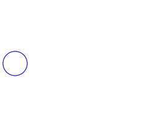

This package contains connectors and interfaces (partial models) for electrical multiphase components, based on Modelica.Electrical.Analog.
| Name | Description |
|---|---|
| Polyphase electrical plug with m pins | |
| Positive polyphase electrical plug with m pins | |
| Negative polyphase electrical plug with m pins | |
| ConditionalHeatPort | Partial model to include conditional HeatPorts in order to describe the power loss via a thermal network |
|  TwoPlug | Component with one polyphase electrical port |
| OnePort | Component with two electrical plugs and currents from plug_p to plug_n |
| Component with two polyphase electrical ports | |
| Component with two polyphase electrical ports, including currents |